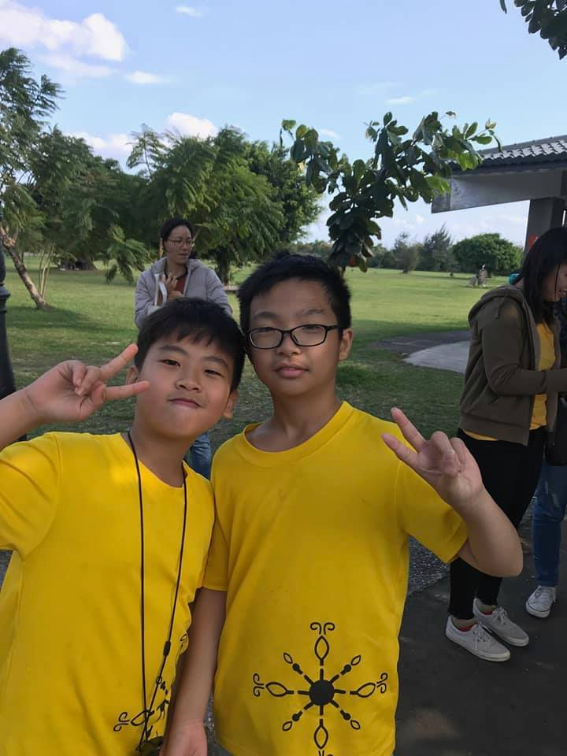

|  | QAQ之家-主人
特傳同人文-那一天 那一刻 第一話-惡夢的前奏 地點:Atlantis 時間:10：15AM [夏碎,我先去看樣樣,天知道他又搞了什麼]冰炎說 [褚學弟沒有你,真的不行呢,只剩一些食魂獸了,你去吧!]夏碎雖隔著面具,可還是聽的出來帶有微微笑意 道聲謝後冰炎隨手丟了一個法陣就消失了 到了醫療班,冰炎先去找了九瀾 九瀾一邊帶路一邊解釋[全妖師都有收到信件,可是有著大量鬼族詛咒,所以都沒打開,可是......][他打開了對吧!]冰炎聽不下去,把後半段說完 到了病房,一位鳳凰族高層說[還好馬上發現,大概2~3天就會好了]。 之後聽夏碎學長說,學長好像每天都來看我。 眼皮沉沉的,我用力將眼睛打開,原先模糊的身影漸漸清稀,那身影令我想到第一天的蜜豆奶......還有火車,不過他的紅眼睛有時覺得很像兔子眼，兇惡版的殺人兔。 「褚，你一醒來就欠揍嗎？」學長把指關節折的喀喀響。 [對不起學長我閉腦了] 第一話-完 番外-那一天 那一刻 那一[人] 地點:??? 時間:??? 在病房,不,在冰炎的身旁得大小事,[他]全曉得,該說因是同一種血,還是因為是[冰昊]呢? 在時間沖刷中,造就[他們]的力量,可是[他們]忘不了那一天叫扇和冰炎的人 「小朋友，來為你的孩子取名字吧！」 扇踹門而入 「扇!麻煩你以後不要用踹的嗎？」 [沒差!來為你的血偶取名字吧!] 「血偶？」 「嗯啊～一種以前做來當武器或砲灰的東西，很容易控制，不會反抗，只需要血和一些東西就能製造，只不過成功率超低技術又已失傳，不然你大概會看到滿街血偶到處跑。」 不知道從哪拿出來一杯茶，少女喝了一口潤喉「而且變成怎樣視血液的優良度而定，有些做出來根本不是人看的。」 「所以…你上次突然偷襲我放我血就是為了做這個？」 「對啊～做來給你玩啊～不然你看起來超孤單的耶！小心那天無聊死。」 [不要!] 少年馬上放了法陣,將所有血偶丟入時間之流 殊不知,這正是結冤的開始 |
| 對話 | 真實度(模訪真正的小說) |
|---|---|
| 👍👍👍 | 👍👍👍 |